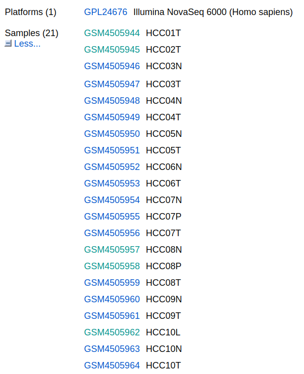

In this week’s lecture, we are going to replicate some results and figures in an article published on “Nature Commnications” using R.
The paper used single-cell RNA sequencing (scRNA-seq) data and generated an atlas of the multicellular ecosystem of primary and metastatic hepatocellular carcinoma. scRNA-seq is a technology that gernerates transcriptome profiles of complex tissues at single-cell levels. It can identify differential gene expression and epigenetic factors caused by mutations in unicellular genomes, as well as new cell-specific markers and cell types. scRNA-seq plays an important role in various aspects of cancer research. It reveals the heterogeneity of tumor cells and monitors the progress of tumor development, thereby preventing further cellular deterioration.
Results to replicate:
scRNA-seq and cell typing of primary and metastatic HCC and paired non-tumor liver tissues
To generate a single-cell atlas of the multicellular ecosystem of HCC, we recruited 10 HCC patients with primary and/or metastatic tumors, who are representatives of different tumor-node-metastasis (TNM) stages and hepatitis virus infection status (Supplementary Fig. 1a; Supplementary Data 1). Transcriptomes of single cells were measured in four relevant tissue types of these patients, including the non-tumor liver (NTL), primary tumor (PT), portal vein tumor thrombus (PVTT) and metastatic lymph node (MLN) tissues (Supplementary Fig. 1b). Overall, we obtained the transcriptomic data of 71,915 single cells, with an average of 1979 detected genes per cell (Supplementary Data 2).
To generate a landscape of the global cellular microenvironment of primary and metastatic HCCs, we merged the scRNA-seq data across all tissues and patients using a canonical correlation analysis (CCA)-based batch correction approach. A total of 53 clusters of cells were identified using a shared-nearest neighbor (SNN)-based unsupervised clustering method (Fig. 1a and Supplementary Fig. 1c). The robustness of the clustering was tested by down-sampling and leave-one-patient-out analyses, which showed robust cluster assignments (Supplemen- tary Fig. 1d).
Figures to replicate:
Data to use: GSE149614
The data can be downloaded here. You can also download it from Canvas.
There are four different sample types: samples (NTL, PT, PVTT and MLN)
- NTL: non-tumor liver. Sample name ending with ‘N’.
- PT: primary tumor. Sample name ending with ‘T’.
- PVTT: portalvein tumor thrombus. Sample name ending with ‘P’.
- MLN: metastatic lymph node. Sample name ending with ‘L’.

R package seurat
We will use the R package seurat for most of the analyses. To install seurat V5 from github, run
install.packages("remotes")
remotes::install_github("satijalab/seurat", "seurat5", quiet = TRUE)
See here more details about the seurat package.
Analysis
Step 1: import data
library(Seurat)
library(dplyr)
# Read in entire file
tirosh <- read.delim("GSE149614_HCC.scRNAseq.S71915.count.txt.gz", header = T, stringsAsFactors = F) ### This step may take some time!
tirosh_genes <- tirosh
rnams <- rownames(tirosh_genes)
rownames(tirosh_genes) <- make.names(rnams, unique=TRUE)
tirosh_meta <- tirosh_genes
# Transpose meta data as Seurat expects meta data to have cell names as rows and meta data values as columns
tirosh_meta_transpose <- data.frame(t(tirosh_meta)) ### This step may take some time!
# Create Seurat Object
sce <- CreateSeuratObject(counts = tirosh_genes, meta.data = tirosh_meta_transpose,
min.cells = 5,
min.features = 500 )
This will create a seurat object for the downsteam analysis.
Step 2: data QC, dimension reduction, principal component analysis
library(Seurat)
library(ggplot2)
library(clustree)
library(cowplot)
library(dplyr)
dir.create("./2-harmony")
getwd()
setwd("./2-harmony")
sce <- NormalizeData(sce,
normalization.method = "LogNormalize",
scale.factor = 1e4)
sce <- FindVariableFeatures(sce)
sce <- ScaleData(sce)
sce <- RunPCA(sce, features = VariableFeatures(object = sce))
library(harmony)
seuratObj <- RunHarmony(sce, "orig.ident")
names(seuratObj@reductions)
seuratObj <- RunUMAP(seuratObj, dims = 1:15,
reduction = "harmony")
DimPlot(seuratObj,reduction = "umap",label=T )
sce=seuratObj
sce <- FindNeighbors(sce, reduction = "harmony",
dims = 1:15)
sce.all=sce
#Set different resolution
for (res in c(0.01, 0.05, 0.1, 0.2, 0.3, 0.5,0.8,1)) {
sce.all=FindClusters(sce.all, #graph.name = "CCA_snn",
resolution = res, algorithm = 1)
}
head(colnames(sce.all))
table(sce.all$orig.ident)
#table(sce.all$group)
table(sce.all@active.ident)
0 1 2 3 4 5 6 7 8 9 10 11 12
20983 6285 4506 4391 4272 3608 3490 3067 2921 2443 2041 1600 1200
13 14 15 16 17 18 19 20 21 22 23 24 25
1170 1134 1041 1036 928 760 640 639 614 591 463 455 438
26 27 28 29 30 31 32
313 242 224 129 117 117 56
#Use resolution 0.5 in the downstream analysis
sel.clust = "RNA_snn_res.0.5"
sce.all <- SetIdent(sce.all, value = sel.clust)
table(sce.all@active.ident)
saveRDS(sce.all, "sce.all_int_0.5.rds")
setwd('../')
Step 3: clustering analysis
getwd()
dir.create("./3-cell")
setwd("./3-cell")
#sce.all<-readRDS("../2-harmony/sce.all_int_0.5.rds")
DimPlot(sce.all, reduction = "umap", group.by = "seurat_clusters",label = T)
DimPlot(sce.all, reduction = "umap", group.by = "RNA_snn_res.0.5",label = T,label.box = T)
ggsave('umap_by_RNA_snn_res.0.5.pdf')
pumap <- DimPlot(sce.all, reduction = "umap", group.by = "RNA_snn_res.0.5",label = T,label.box = T)
#marker gene
#metadata <- read.csv("../GSE146409-paper_marker.csv", header = T)
#a<-metadata$gene
#head(a)
##[1] "FXYD3" "CLDN4" "CEACAM6" "CEACAM5" "ELF" "CLDN10"
#genes_to_check<-a
#a
#[1] "FXYD3" "CLDN4" "CEACAM6" "CEACAM5" "ELF"
#[6] "CLDN10" "SLC22A10" "FETUB" "LBP" "HPR"
# ...
genes_to_check <- c("FXYD3", "CLDN4", "CEACAM6", "CEACAM5", "ELF",
"CLDN10", "SLC22A10", "FETUB", "LBP", "HPR",
"LECT2", "SERPINA10", "CD5L", "VCAM1", "CETP",
"LILRB5", "MARCO", "SDC3", "TREM2", "GPNMB",
"CAPG", "FCER1A", "CD1C", "CLEC10A", "JAML",
"S100A9", "FCN1", "S100A8", "FGR", "XCR1",
"CLEC9A", "IDO1", "WDFY4", "FLT3", "CPNE3",
"GZMA", "CD3E", "KLRB1", "NKG7", "CD7",
"CCL5", "IGLL5", "FCRL5", "TNFRSF17", "DERL3",
"JCHAIN", "MZB1", "CPE", "SLCO2A1", "CLEC14A",
"TGM2", "PODXL", "VWA1", "SOX18", "PLVAP",
"CD34", "ICAM2", "RELN", "CLEC4M", "CLEC1B",
"CLEC4G", "FCN2", "OIT3", "RERGL", "AC006254.1",
"MYH11", "ITGA8", "PLN", "ADIRF", "OLFML2A",
"NDUFA4L2", "RGS5", "TPPP3", "PLXDC1", "FRZB",
"MMP11", "CTHRC1", "INHBA", "HOPX", "POSTN",
"LTBP2", "CXCL12", "PTGDS", "MASP1", "FBLN1",
"C7", "HGF", "TPX2", "MKi67", "UBE2C",
"ASPM", "TOP2A", "RRM2", "EPCAM", "KRT19",
"KRT18", "PROM1", "ALDH1A1", "CD24")
library(stringr)
genes_to_check=str_to_upper(unique(genes_to_check))
genes_to_check
p_all_markers <- DotPlot(sce.all, features = genes_to_check,
assay='RNA') + coord_flip()
p_all_markers
ggsave(plot=p_all_markers, filename="check_paper_zeng_marker_by_seurat_cluster0.5_2.pdf"
,width = 10,height = 14)
#put bubble plot and UMAP together
library(patchwork)
p_all_markers+pumap
ggsave('markers_umap0.5.pdf',width = 18,height = 14)
Step4: name the cell sub-clusters
celltype=data.frame(ClusterID=0:20,
celltype= 0:20)
#define cell sub-clusters
celltype[celltype$ClusterID %in% c(2,7,10,14,15,19),2]='Hepatocyte'
celltype[celltype$ClusterID %in% c(4),2]='tumor'
celltype[celltype$ClusterID %in% c(5),2]='cycling'
celltype[celltype$ClusterID %in% c(0,13,16),2]='T/NK'
celltype[celltype$ClusterID %in% c(1,3,11,17),2]='myeloid'
celltype[celltype$ClusterID %in% c(9,12),2]='B cells'
celltype[celltype$ClusterID %in% c(6,18,20),2]='Endo'
celltype[celltype$ClusterID %in% c(8),2]='Fibo'
head(celltype)
celltype
table(celltype$celltype)
sce.all@meta.data$celltype = "NA"
for(i in 1:nrow(celltype)){
sce.all@meta.data[which(sce.all@meta.data$RNA_snn_res.0.5 == celltype$ClusterID[i]),'celltype'] <- celltype$celltype[i]}
table(sce.all@meta.data$celltype)
# ClusterID celltype
#1 0 T/NK
#2 1 myeloid
#3 2 Hepatocyte
#4 3 myeloid
#5 4 tumor
#6 5 cycling
#7 6 Endo
#8 7 Hepatocyte
#9 8 Fibo
#10 9 B cells
#11 10 Hepatocyte
#12 11 myeloid
#13 12 B cells
#14 13 T/NK
#15 14 Hepatocyte
#16 15 Hepatocyte
#17 16 T/NK
#18 17 myeloid
#19 18 Endo
#20 19 Hepatocyte
#21 20 Endo
# B cells cycling Endo Fibo Hepatocyte myeloid T/NK
# 2708 3829 4184 1839 14083 16222 24353
# tumor
# 4696
DimPlot(sce.all, reduction = "umap", group.by = "celltype",
#cols = color,
pt.size = 1.5,
label = T,label.box = T
)
ggsave('./celltype-umap.pdf',height = 6,width = 8)
saveRDS(sce.all, "sce.all_int_celltype.rds")
setwd("../")
step5: Cell proportion
step5-1: inmmune cells
library(ggplot2)
library(cowplot)
library(paletteer)
library(gplots)
library(ggpubr)
library(ggsci)
library(stringr)
getwd()
dir.create("../4_group1")
setwd("../4_group1/")
sce0=readRDS("../3-cell/sce.all_int_celltype.rds")
table(sce0@meta.data$group)
#< table of extent 0 >
table(sce0@meta.data$celltype)
B cells cycling Endo Fibo Hepatocyte myeloid T/NK
2708 3829 4184 1839 14083 16222 24353
tumor
4696
sce.all=sce0[,sce0@meta.data$celltype%in%c("T/NK","B cells","myeloid","cycling")]
table(sce.all@meta.data$celltype)
B cells cycling myeloid T/NK
2708 3829 16222 24353
sce=sce.all
# Visualizing
library(tidyr)
library(reshape2)
library(dplyr)
library(ggplot2)
library(gplots)
tb=table(sce@meta.data$celltype,
sce@meta.data$orig.ident)
balloonplot(tb)
head(tb)
bar_data <- as.data.frame(tb)
head(bar_data)
# HCC01T HCC02T HCC03N HCC03T HCC04N HCC04T HCC05N HCC05T HCC06N HCC06T
# B cells 10 546 43 37 140 74 144 33 134 274
# cycling 28 329 49 303 30 370 34 31 28 71
# myeloid 52 1664 934 3129 431 1985 120 1320 321 316
# T/NK 974 636 306 102 1411 59 3087 248 2629 1557
#
# HCC07N HCC07P HCC07T HCC08N HCC08P HCC08T HCC09N HCC09T HCC10L HCC10N
# B cells 166 58 26 163 71 139 200 92 184 63
# cycling 34 69 8 49 986 358 59 295 381 68
# myeloid 99 200 78 54 1604 1050 174 941 902 110
# T/NK 2386 280 99 4001 407 1346 897 547 430 2258
#
# HCC10T
# B cells 111
# cycling 249
# myeloid 738
# T/NK 693
# Var1 Var2 Freq
#1 B cells HCC01T 10
#2 cycling HCC01T 28
#3 myeloid HCC01T 52
#4 T/NK HCC01T 974
#5 B cells HCC02T 546
#6 cycling HCC02T 329
bar_per <- bar_data %>%
group_by(Var1) %>%
mutate(sum(Freq)) %>%
mutate(percent = Freq / `sum(Freq)`)
head(bar_per)
write.csv(bar_per,file = "celltype_by_group_percent.csv")
#visualization
bar_per$Var2
bar_per$Var2 <- factor(bar_per$Var2,levels=c('HCC01T','HCC02T','HCC03T',
'HCC04T','HCC05T','HCC06T','HCC07T','HCC08T','HCC09T',
'HCC10T','HCC03N','HCC04N','HCC05N','HCC06N',
'HCC07N','HCC08N','HCC09N','HCC10N',"HCC07P","HCC08P","HCC10L"),ordered = TRUE)
library(ggalluvial)
mycolor = c('#E64B3599',
'#4DBBD599',
'#00A08799',
'#3C548899',
'#F39B7F99')
ggplot(bar_per, aes(x =Var2, y= percent, fill = Var1,
stratum=Var1, alluvium=Var1)) +
# guides(color=guide_legend(title = "ABC"))+
geom_col(width = 0.5, color='black')+
geom_flow(width=0.5,alpha=0.4, knot.pos=0.5)+
theme_classic() +
labs(x='sample',y ='Ratio',title = "by group"
)+
coord_flip()+
scale_fill_manual(values = mycolor)
ggsave("celltypebyorigent_percent_immune.pdf")
step5-2: non-inmmune cells
sce0=readRDS("../3-cell/sce.all_int_celltype.rds")
table(sce0@meta.data$celltype)
sce.all=sce0[,sce0@meta.data$celltype%in%c("Endo","Hepatocyte","Fibo","tumor")]
table(sce.all@meta.data$celltype)
Endo Fibo Hepatocyte tumor
4184 1839 14083 4696
sce=sce.all
tb=table(sce@meta.data$celltype,
sce@meta.data$orig.ident)
balloonplot(tb)
head(tb)
bar_data <- as.data.frame(tb)
head(bar_data)
# HCC01T HCC02T HCC03N HCC03T HCC04N HCC04T HCC05N HCC05T HCC06N
# Endo 572 14 233 14 535 32 401 595 270
# Fibo 10 320 10 213 2 251 0 15 1
# Hepatocyte 1351 497 720 865 459 633 710 909 829
# tumor 371 95 305 162 388 97 160 202 253
# HCC06T HCC07N HCC07P HCC07T HCC08N HCC08P HCC08T HCC09N HCC09T
# Endo 619 215 27 0 151 54 48 159 54
# Fibo 15 0 18 1 0 114 41 1 319
# Hepatocyte 1181 523 717 207 219 792 1488 285 469
# tumor 275 317 460 91 158 114 363 187 99
# HCC10L HCC10N HCC10T
# Endo 34 147 10
# Fibo 302 2 204
# Hepatocyte 451 232 546
# tumor 159 192 248
# Var1 Var2 Freq
#1 Endo HCC01T 572
#2 Fibo HCC01T 10
#3 Hepatocyte HCC01T 1351
#4 tumor HCC01T 371
#5 Endo HCC02T 14
#6 Fibo HCC02T 320
bar_per <- bar_data %>%
group_by(Var1) %>%
mutate(sum(Freq)) %>%
mutate(percent = Freq / `sum(Freq)`)
head(bar_per)
write.csv(bar_per,file = "celltype_by_group_percent_noninmune.csv")
#visualization
bar_per$Var2
bar_per$Var2 <- factor(bar_per$Var2,levels=c('HCC01T','HCC02T','HCC03T',
'HCC04T','HCC05T','HCC06T','HCC07T','HCC08T','HCC09T',
'HCC10T','HCC03N','HCC04N','HCC05N','HCC06N',
'HCC07N','HCC08N','HCC09N','HCC10N',"HCC07P","HCC08P","HCC10L"),ordered = TRUE)
library(ggalluvial)
mycolor = c('#efb306',
'#7db954',
'#852f88',
'#4e54ac',
'#0f8096')
ggplot(bar_per, aes(x =Var2, y= percent, fill = Var1,
stratum=Var1, alluvium=Var1)) +
geom_col(width = 0.5, color='black')+
geom_flow(width=0.5,alpha=0.4, knot.pos=0.5)+
theme_classic() +
labs(x='sample',y ='Ratio',title = "by group"
)+
coord_flip()+
scale_fill_manual(values = mycolor)
ggsave("celltypebyorigent_percent_nonimmune.pdf")